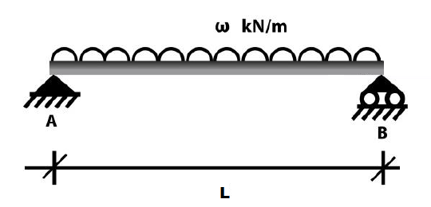
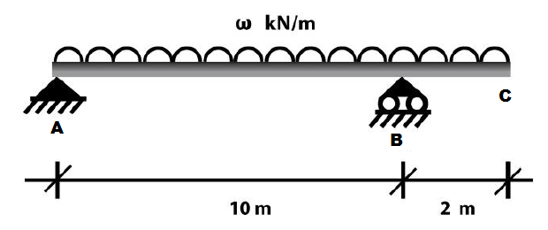

An simply supported beam is shown below:

This beam is of length L = 6 m and has an uniform distributed load (UDL) ω = kN applied on that.
Please calculate the deflection of the beam.
An overhanging beam is shown below:

The beam has an uniform distributed load (UDL) ω = 30 kN applied on its whole length.
Please calculate the deflection of the beam in terms of EI.